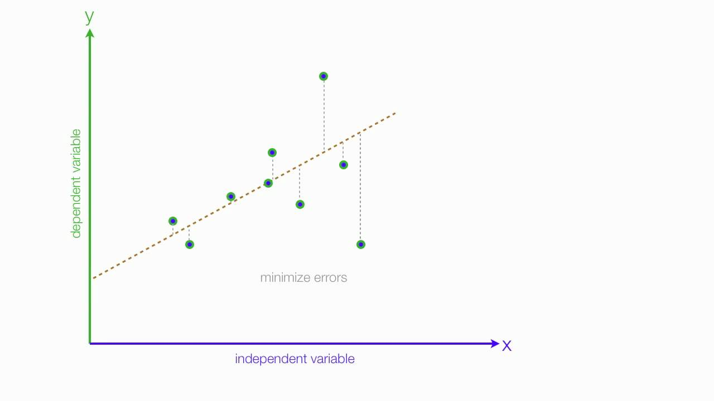

projection
The description, explanation, and simulation of human
thought processes.We define the projection of a linear space the linear mapping
where is a subpace of (). must have the following property:
The intuition is that we can "sqeeze" a multidimentional vector on less dimension. For example:
